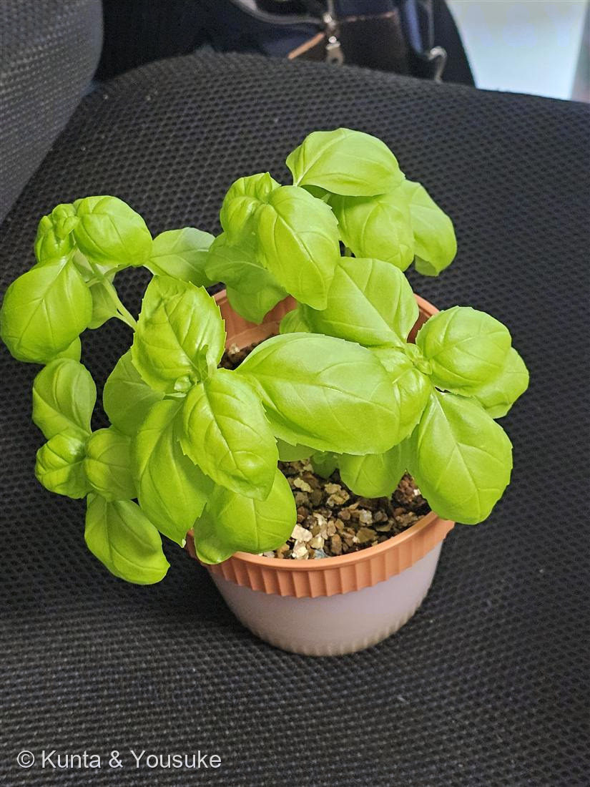

地図を読み込んでいるよ…
🔍 写真も地図も、押しているあいだ拡大して見られるよ（スマホは指を置いてすこし待ってね）。
🌍 の地図＝この子がもともと自生している場所を緑に。地中海〜熱帯アジア（栽培種）。
⚠昔から世界じゅうで育てられてきた子で、「ここが野生のふるさと」がはっきりしない。地図は出典の「地中海〜熱帯アジア」を広めに塗ったもの。
⚠ 地図は国（日本と中国だけ県・省）までしか塗れないから、ほんとうの分布より広く見えていることがあるよ。地図はだいたいの場所。正確なところは、上の文を見てね。
スイートバジル
Ocimum basilicum L.
別名 · バジル／バジリコ／メボウキ（目箒）
シソ科 · Lamiaceae（メボウキ属 Ocimum）
おうちの植物（思い出）昔ガパオライス用に育てた今は育てていない・いつかまた
名前と学名の由来
- Ocimum（オキムム）＝バジル類を指すギリシャ語 ōkimon に由来する古い植物名（No.015 ホーリーバジルと同じ属）。
- basilicum（バシリクム）＝ギリシャ語 basilikos「王の」に由来＝「王のハーブ」。「バジル（basil）」の名も、この“王”の語から。
- 和名メボウキ（目箒）＝種子を水に浸すと寒天状にふくらみ、目に入ったゴミを絡めとる「目の箒」に使ったことから。
この植物のこと
- シソ科メボウキ属の一年草。イタリア料理の代表ハーブ（ジェノベーゼ、マルゲリータ、カプレーゼ）。甘く爽やかな香り（主成分リナロールなど）。
- No.015 ホーリーバジルとは別種。見分けは葉——スイートは葉が幅広く丸い明るい緑、ホーリーは細めで茎が赤紫・毛が多い。
- ガパオは本来ホーリーバジルの料理。でも日本ではホーリーが手に入りにくいので、スイートバジルで代用してガパオを作ることが多い——この子が“ガパオ用”だった理由。本家（015）と代用（021）で、ガパオつながりの姉妹。
- 日光と暖かさが大好き。摘芯すると脇芽が増えてこんもり、花穂を早めに摘むと葉の収穫が長持ち。寒さに弱く、日本では一年草。
参考：ハーブ・バジルの一般的な栽培管理をもとに整理。